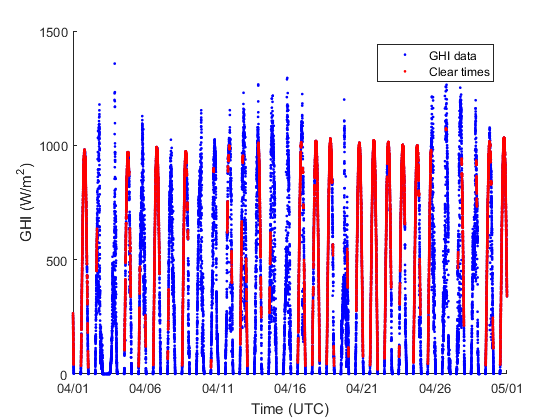
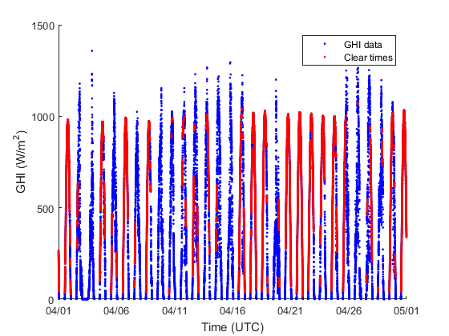

pvl_detect_clear_times
Identify times with GHI consistent with clear sky conditions.
Contents
Syntax
[clearSamples, csGHI, alpha] = pvl_detect_clear_times(GHI, Time, UTCoffset, Location, win_length, sample_interval)
Description
Detects clear sky times by comparing statistics for a regular GHI time series to the Ineichen clear sky model. Statistics are calculated using a sliding time window (e.g., 10 minutes). An iterative algorithm identifies clear periods, uses the identified periods to estimate bias in the clear sky model and/or GHI data, adjusts the clear sky model and repeats. Code handles GHI data with some irregularities, i.e., missing values or unequal data spacing. Code execution can be made significantly faster if equally spaced and complete data can be assumed.
Clear times are identified by meeting 5 criteria, thresholds for which are hardcoded in this version. Values for these thresholds are appropriate for 10 minute windows of 1 minute GHI data.
Inputs:
- GHI - a Nx1 vector of GHI values (W/m^2)
- Time - a Nx1 vector of datenum with equal time spacing
- UTCoffset - scalar UTC offset (e.g. EST = -5)
- Location - a struct with the following elements, note that all elements must be scalars in this application.
- Location.latitude - scalar latitude in decimal degrees (positive is northern hemisphere)
- Location.longitude - scalar longitude in decimal degrees (positive is east of prime meridian)
- Location.altitude - scalar height above sea level in meters. While altitude is optional in many uses, it is required in this model implementation.
- win_length - length of sliding time window in minutes, integer
- sample_interval - nominal minutes between each GHI sample time, integer
Output:
- * clearSamples* - column vector of logical values with True indicating a clear sample in the input GHI time series
- * csGHI* - column vector with scaled clear sky GHI derived from the Ineichen model
- * alpha* - scaling factor applied to Ineichen model to obtain output csGHI
References
[1] Reno, M.J. and C.W. Hansen, "Identification of periods of clear sky irradiance in time series of GHI measurements" Renewable Energy, v90, p. 520-531, 2016.
Notes:
Initial implementation by Matthew Reno. Modifications for computational efficiency by Joshua Patrick and Curtis Martin.
Example
% load data for Albuquerque, Time in UTC and GHI in W/m2 load 'PSEL_GHI_2012.mat'; dv = datevec(Time); u = dv(:,2) == 4; % Select April 2012 Time = Time(u); GHI = GHI(u); % set up Location Location.latitude = 35.04; Location.longitude = -106.62; Location.altitude = 1619; UTCoffset = 0; % because example data are in UTC time win_length = 10; % consider 10 minute intervals % GHI data is nominally at 1 minute intervals, but in our example there are % missing samples and data aren't exactly at 1 minute intervals sample_interval = 1; % Demonstrate algorithm for unequally spaced data [clearSamples, csGHI, alpha] = pvl_detect_clear_times(GHI, Time, UTCoffset, Location, win_length, sample_interval); figure hold all plot(Time, GHI, 'b.') plot(Time(clearSamples), GHI(clearSamples), 'r.') xlabel('Time (UTC)') ylabel('GHI (W/m^2)') datetick('x','mm/dd','KeepTicks') legend('GHI data','Clear times')
Data problem between 11-Apr-2012 17:50:00 and 11-Apr-2012 17:59:59 have 8 values
make data equally spaced by rounding, fill in missing data by linear
interpolation
% create full time vector sTime sivec = 0:round(max(Time)*1440) - round(Time(1)*1440); sTime = (round(Time(1)*1440) + sivec)/1440; sTime = sTime(:); sGHI = NaN(size(sTime)); sGHI(round(Time*1440) - round(Time(1)*1440) + 1) = GHI; % interpolate GHI to fill in NaNs in daylight GHI. Leave NaNs in for nighttime data [~, SunEl, ~, ~] = pvl_ephemeris(pvl_maketimestruct(sTime,UTCoffset), Location); daylight = SunEl > 1; u = isnan(sGHI) & daylight; sGHI(u) = interp1(sTime(daylight & ~u), sGHI(daylight & ~u), sTime(u)); % Demonstrate algorithm for equally spaced data [clearSamples, csGHI, alpha] = pvl_detect_clear_times(sGHI, sTime, UTCoffset, Location, win_length, sample_interval); figure hold all plot(sTime, sGHI, 'b.') plot(sTime(clearSamples), sGHI(clearSamples), 'r.') xlabel('Time (UTC)') ylabel('GHI (W/m^2)') datetick('x','mm/dd','KeepTicks') legend('GHI data','Clear times')